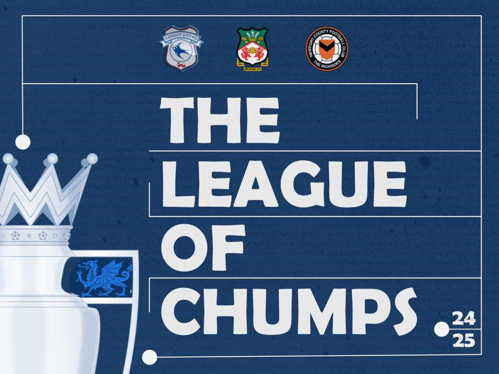

Table
| CR | CS | Pts | Last 5 Predictions | |
|---|---|---|---|---|
Richard |
55 | 12 | 91 | |
| Daniel |
50 | 10 | 80 | |
| Tomi |
55 | 5 | 70 | |
| Gary |
50 | 6 | 68 | |
| Charlie |
46 | 7 | 67 | |
| Lewis |
45 | 7 | 66 |
Predictions / Results
| 12.02.25 | Swansea v Sheffield W Result |
|---|---|
| Charlie | 2 - 0 |
| Daniel | 1 - 0 |
| Gary | 1 - 1 |
| Lewis | 1 - 2 |
| Richard | 1 - 1 |
| Tomi | 2 - 1 |
| 11.02.25 | P'Mouth v Cardiff Result 2 - 1 |
Newport v Carlisle Result 1 - 0 |
Wrexham v Bolton Result 1 - 0 |
|---|---|---|---|
| Charlie | 1 - 3 | 0 - 2 | 2 - 1 |
| Daniel | 1 - 2 | 2 - 0 | 2 - 1 |
| Gary | 1 - 2 | 2 - 1 | 1 - 1 |
| Lewis | 1 - 2 | 2 - 0 | 2 - 1 |
| Richard | 1 - 3 | 1 - 2 | 1 - 0 |
| Tomi | 2 - 0 | 1 - 2 | 3 - 1 |
| 09.02.25 | Bristol C v Swansea Result 0 - 1 |
|---|---|
| Charlie | 0 - 2 |
| Daniel | 2 - 0 |
| Gary | 3 - 0 |
| Lewis | 2 - 1 |
| Richard | 2 - 0 |
| Tomi | 2 - 0 |
| 08.02.25 | Stoke v Cardiff Result 3 - 3 |
Crewe v Newport Result 0 - 3 |
|---|---|---|
| Charlie | 1 - 3 | 2 - 1 |
| Daniel | 0 - 1 | 1 - 0 |
| Gary | 1 - 2 | 2 - 0 |
| Lewis | 2 - 1 | 2 - 0 |
| Richard | 0 - 2 | 2 - 0 |
| Tomi | 2 - 1 | 3 - 1 |
| 04.02.25 | Port Vale v Wrexham Result 1 - 4 |
Newport v Morecombe Result 2 - 1 |
|---|---|---|
| Charlie | No Score | No Score |
| Daniel | 1 - 1 | 1 - 0 |
| Gary | 2 - 2 | 2 - 0 |
| Lewis | 1 - 2 | 2 - 1 |
| Richard | 0 - 3 | 3 - 1 |
| Tomi | 0 - 2 | 1 - 2 |
| 01.02.25 | Leeds v Cardiff Result 7 - 0 |
Swansea v Coventry Result 0 - 2 |
|---|---|---|
| Charlie | 2 - 2 | 1 - 3 |
| Daniel | 1 - 0 | 0 - 1 |
| Gary | 1 - 1 | 2 - 1 |
| Lewis | 2 - 0 | 0 - 2 |
| Richard | 2 - 1 | 1 - 2 |
| Tomi | 2 - 0 | 0 - 1 |
| 01.02.25 | Crawley v Wrexham Result 1 - 2 |
Newport v Barrow Result 1 - 0 |
|---|---|---|
| Charlie | 1 - 2 | 2 - 1 |
| Daniel | 0 - 2 | 1 - 1 |
| Gary | 0 - 2 | 2 - 0 |
| Lewis | 0 - 2 | 1 - 1 |
| Richard | 0 - 1 | 1 - 0 |
| Tomi | 1 - 3 | 1 - 0 |
| 28.01.25 | Wrexham v Stevenage Result 2 - 3 |
Salford v Newport Result 1 - 1 |
|---|---|---|
| Charlie | 1 - 0 | 1 - 2 |
| Daniel | 1 - 0 | 2 - 1 |
| Gary | 2 - 0 | 2 - 1 |
| Lewis | 3 - 1 | 2 - 0 |
| Richard | 2 - 0 | 2 - 0 |
| Tomi | 3 - 0 | 3 - 1 |
| 25.01.25 | Cardiff v Derby Result 2 - 1 |
Norwich v Swansea Result 5 - 1 |
|---|---|---|
| Charlie | 3 - 0 | No Score |
| Daniel | 1 - 0 | 1 - 1 |
| Gary | 2 - 0 | 2 - 1 |
| Lewis | 2 - 1 | 2 - 0 |
| Richard | 2 - 1 | 2 - 1 |
| Tomi | 1 - 2 | 1 - 0 |
| 24.01.25 | Newport v Swindon Result 1 - 2 |
|---|---|
| Charlie | No Score |
| Daniel | 1 - 0 |
| Gary | No Score |
| Lewis | 2 - 2 |
| Richard | 2 - 1 |
| Tomi | No Score |
| 23.01.25 | Wrexham v Birmingham Result 1 - 1 |
|---|---|
| Charlie | 2 - 1 |
| Daniel | 1 - 2 |
| Gary | 1 - 1 |
| Lewis | 0 - 2 |
| Richard | 1 - 2 |
| Tomi | 1 - 1 |
| 21.01.25 | Millwall v Cardiff Result 2 - 2 |
Swansea v Sheffield Result 1 - 2 |
|---|---|---|
| Charlie | 0 - 3 | 0 - 3 |
| Daniel | 1 - 2 | 0 - 2 |
| Gary | 1 - 2 | 0 - 2 |
| Lewis | 1 - 1 | 0 - 2 |
| Richard | 0 - 2 | 0 - 3 |
| Tomi | 2 - 1 | 0 - 2 |
| 18.01.25 | Cardiff v Swansea Result 3 - 0 |
Port Vale v Newport Result 3 - 2 |
|---|---|---|
| Charlie | 3 - 1 | 2 - 0 |
| Daniel | 1 - 1 | 2 - 1 |
| Gary | 1 - 0 | 2 - 0 |
| Lewis | 2 - 1 | 3 - 1 |
| Richard | 1 - 1 | 2 - 0 |
| Tomi | 0 - 2 | 2 - 1 |
| 16.01.25 | Shrewsbury v Wrexham Result 2 - 1 |
|---|---|
| Charlie | 1 - 2 |
| Daniel | 0 - 1 |
| Gary | 1 - 2 |
| Lewis | 1 - 2 |
| Richard | 0 - 2 |
| Tomi | 0 - 2 |
| 14.01.25 | Cardiff v Watford Result 1 - 1 |
|---|---|
| Charlie | 3 - 1 |
| Daniel | 1 - 1 |
| Gary | 2 - 0 |
| Lewis | 2 - 1 |
| Richard | 1 - 2 |
| Tomi | 0 - 2 |
| 12.01.25 FACup |
Southampton v Swansea Result 3 - 0 |
|---|---|
| Charlie | 3 - 0 |
| Daniel | 2 - 0 |
| Gary | 2 - 0 |
| Lewis | 2 - 0 |
| Richard | 3 - 1 |
| Tomi | 2 - 1 |
| 09.01.25 FACup |
Sheffield U v Cardiff Result 0 - 1 |
|---|---|
| Charlie | 3 - 1 |
| Daniel | 2 - 0 |
| Gary | 2 - 1 |
| Lewis | 3 - 0 |
| Richard | 3 - 0 |
| Tomi | 3 - 1 |
| 04.01.25 | M'borough v Cardiff Result 1 - 1 |
Swansea v West B Result 1 - 1 |
Wrexham v P'borough Result 1 - 0 |
|---|---|---|---|
| Charlie | No Score | No Score | No Score |
| Daniel | 2 - 0 | 1 - 1 | 2 - 1 |
| Gary | 1 - 2 | 1 - 2 | 2 - 0 |
| Lewis | 2 - 1 | 1 - 2 | 2 - 1 |
| Richard | 1 - 1 | 0 - 2 | 3 - 0 |
| Tomi | 3 - 1 | 1 - 2 | 2 - 0 |
| 02.01.25 | Newport v Wimbledon Result 1 - 2 |
|---|---|
| Charlie | 0 - 2 |
| Daniel | 0 - 1 |
| Gary | 1 - 1 |
| Lewis | 0 - 2 |
| Richard | 0 - 2 |
| Tomi | 1 - 1 |
| 01.01.25 | Cardiff v Coventry Result 1 - 1 |
Portsmouth v Swansea Result 4 - 0 |
Barnsley v Wrexham Result 2 - 1 |
|---|---|---|---|
| Charlie | 2 - 1 | 0 - 2 | 1 - 2 |
| Daniel | 1 - 2 | 1 - 1 | 0 - 0 |
| Gary | 2 - 1 | 1 - 3 | 1 - 2 |
| Lewis | 0 - 2 | 1 - 2 | 1 - 1 |
| Richard | 1 - 1 | 1 - 3 | 1 - 3 |
| Tomi | 1 - 2 | 0 - 2 | 1 - 1 |
| 29.12.24 | Watford v Cardiff Result 1 - 2 |
Swansea v Luton Result 2 - 1 |
|---|---|---|
| Charlie | 4 - 0 | 3 - 0 |
| Daniel | 2 - 0 | 1 - 1 |
| Gary | 3 - 0 | 3 - 0 |
| Lewis | 2 - 0 | 1 - 2 |
| Richard | 3 - 1 | 2 - 0 |
| Tomi | 3 - 0 | 2 - 1 |
| 29.12.24 | Wrexham v Wigan Result 2 - 1 |
Walsall v Newport Result 2 - 0 |
|---|---|---|
| Charlie | 2 - 0 | 3 - 1 |
| Daniel | 1 - 0 | 2 - 0 |
| Gary | 2 - 1 | 1 - 1 |
| Lewis | 2 - 1 | 2 - 0 |
| Richard | 2 - 1 | 3 - 0 |
| Tomi | 1 - 0 | 2 - 1 |
| 26.12.24 | Oxford v Cardiff Result 3 - 2 |
Swansea v QPR Result 3 - 0 |
|---|---|---|
| Charlie | 1 - 2 | 2 - 0 |
| Daniel | 1 - 1 | 1 - 1 |
| Gary | 1 - 2 | 2 - 1 |
| Lewis | 1 - 2 | 2 - 0 |
| Richard | 1 - 1 | 1 - 1 |
| Tomi | 0 - 1 | 1 - 0 |
| 26.12.24 | Wrexham v Blackpool Result 2 - 1 |
Bromley v Newport Result 5 - 2 |
|---|---|---|
| Charlie | 2 - 0 | 3 - 1 |
| Daniel | 1 - 0 | 2 - 1 |
| Gary | 2 - 1 | 1 - 1 |
| Lewis | 3 - 0 | 0 - 2 |
| Richard | 3 - 1 | 1 - 1 |
| Tomi | 2 - 0 | 0 - 1 |
| 21.12.24 | Cardiff v Sheffield U Result 0 - 2 |
Hull v Swansea Result 2 - 1 |
|---|---|---|
| Charlie | 0 - 6 | 0 - 4 |
| Daniel | 0 - 2 | 0 - 2 |
| Gary | 1 - 1 | 2 - 1 |
| Lewis | 0 - 3 | 1 - 2 |
| Richard | 0 - 3 | 1 - 1 |
| Tomi | 0 - 3 | 0 - 2 |
| 21.12.24 | Bristol R v Wrexham Result 1 - 1 |
Newport v MK Dons Result 6 - 3 |
|---|---|---|
| Charlie | 1 - 2 | 0 - 2 |
| Daniel | 0 - 1 | 0 - 1 |
| Gary | 2 - 2 | 1 - 1 |
| Lewis | 1 - 2 | 2 - 2 |
| Richard | 1 - 3 | 1 - 2 |
| Tomi | 1 - 3 | 1 - 2 |
| 14.12.24 | Stoke v Cardiff Result 2 - 2 |
Swansea v Sunderland Result 2 - 3 |
|---|---|---|
| Charlie | 3 - 0 | 1 - 3 |
| Daniel | 2 - 1 | 1 - 1 |
| Gary | 2 - 0 | 1 - 1 |
| Lewis | 2 - 0 | 1 - 3 |
| Richard | 2 - 1 | 0 - 2 |
| Tomi | 2 - 0 | 1 - 0 |
| 14.12.24 | Wrexham v Cambridge Result 2 - 2 |
Colchester v Newport Result 0 - 0 |
|---|---|---|
| Charlie | 2 - 0 | 1 - 2 |
| Daniel | 2 - 0 | 1 - 0 |
| Gary | 2 - 0 | 1 - 2 |
| Lewis | 2 - 1 | 1 - 1 |
| Richard | 2 - 0 | 2 - 0 |
| Tomi | 2 - 0 | 3 - 1 |
| 11.12.24 | Cardiff v Preston Result 0 - 2 |
|---|---|
| Charlie | 3 - 0 |
| Daniel | 1 - 1 |
| Gary | 2 - 0 |
| Lewis | 1 - 1 |
| Richard | 2 - 1 |
| Tomi | 0 - 1 |
| 10.12.24 | Plymouth v Swansea Resul 1 - 2 |
Wrexham v Crewe Result 1 - 0 |
|---|---|---|
| Charlie | No Score | No Score |
| Daniel | 0 - 2 | 2 - 0 |
| Gary | No Score | No Score |
| Lewis | 1 - 2 | 2 - 1 |
| Richard | 1 - 2 | 1 - 2 |
| Tomi | 0 - 2 | 3 - 1 |
| 07.12.24 | Luton v Swansea Result 1 - 1 |
Burton v Wrexham Result 0 - 1 |
|---|---|---|
| Charlie | 1 - 2 | 0 - 2 |
| Daniel | 1 - 1 | 0 - 2 |
| Gary | 2 - 1 | 1 - 2 |
| Lewis | No Score | No Score |
| Richard | 1 - 1 | 0 - 4 |
| Tomi | 1 - 2 | 0 - 3 |
| 03.12.24 | Wrexham v Barnsley Result 1 - 0 |
Wimbledon v Newport Result 2 - 2 |
|---|---|---|
| Charlie | 2 - 0 | 2 - 0 |
| Daniel | 2 - 1 | 1 - 1 |
| Gary | 2 - 1 | 2 - 0 |
| Lewis | 3 - 1 | 2 - 1 |
| Richard | 3 - 1 | 2 - 0 |
| Tomi | 2 - 0 | 1 - 0 |
| 30.11.24 | Coventry v Cardiff Result 2 - 2 |
Swansea v Portsmouth Result 2 - 2 |
|---|---|---|
| Charlie | No Score | No Score |
| Daniel | 2 - 0 | 2 - 0 |
| Gary | 1 - 2 | 3 - 0 |
| Lewis | 2 - 1 | 2 - 0 |
| Richard | 2 - 1 | 2 - 1 |
| Tomi | 3 - 1 | 2 - 1 |
| 27.11.24 | Cardiff v QPR Result 0 - 2 |
Derby v Swansea Result 1 - 2 |
|---|---|---|
| Charlie | 2 - 0 | 2 - 1 |
| Daniel | 1 - 1 | 1 - 2 |
| Gary | 2 - 0 | 3 - 1 |
| Lewis | 2 - 1 | 2 - 2 |
| Richard | 2 - 1 | 1 - 2 |
| Tomi | 0 - 1 | 0 - 2 |
| 26.11.24 | Wrexham v Lincoln Result 1 - 0 |
|---|---|
| Charlie | 2 - 0 |
| Daniel | 2 - 1 |
| Gary | 2 - 1 |
| Lewis | 2 - 0 |
| Richard | 3 - 2 |
| Tomi | 3 - 0 |
| 24.11.24 | Swansea v Leeds Result 3 - 4 |
|---|---|
| Charlie | 0 - 5 |
| Daniel | 0 - 1 |
| Gary | 0 - 2 |
| Lewis | 0 - 4 |
| Richard | 0 - 2 |
| Tomi | 0 - 0 |
| 23.11.24 | Sheff W v Cardiff Result 1 - 1 |
Wrexham v Exeter Result 3 - 0 |
Notts C v Newport Result 0 - 0 |
|---|---|---|---|
| Charlie | 0 - 2 | 2 - 1 | 3 - 1 |
| Daniel | 0 - 0 | 1 - 0 | 2 - 0 |
| Gary | 1 - 2 | 2 - 0 | 2 - 0 |
| Lewis | 2 - 1 | 2 - 1 | 3 - 1 |
| Richard | 1 - 1 | 2 - 1 | 2 - 1 |
| Tomi | 1 - 0 | 2 - 0 | 1 - 0 |
| 16.11.24 | Stockport v Wrexham Result 1 - 0 |
Newport v Grimsby Result 0 - 0 |
|---|---|---|
| Charlie | 1 - 2 | 2 - 1 |
| Daniel | 0 - 1 | 1 - 1 |
| Gary | 1 - 1 | 1 - 1 |
| Lewis | 1 - 2 | 1 - 3 |
| Richard | 2 - 2 | 1 - 2 |
| Tomi | 0 - 2 | 1 - 1 |
| 12.11.24 EFL Trophy |
Port Vale v Wrexham Result 1 - 1 |
Reading v Newport Result 3 - 0 |
|---|---|---|
| Charlie | 0 - 2 | No Score |
| Daniel | 1 - 2 | 1 - 0 |
| Gary | 1 - 2 | 2 - 0 |
| Lewis | 1 - 2 | No Score |
| Richard | 1 - 1 | 2 - 1 |
| Tomi | 0 - 2 | No Score |
| 10.11.24 | Burnley v Swansea Result 1 - 0 |
|---|---|
| Charlie | 3 - 1 |
| Daniel | 0 - 0 |
| Gary | 2 - 0 |
| Lewis | 2 - 0 |
| Richard | 3 - 1 |
| Tomi | 1 - 1 |
| 09.11.24 | Cardiff v Blackburn Result 1 - 3 |
Wrexham v Mansfield Result 1 - 0 |
Tranmere v Newport Result 2 - 1 |
|---|---|---|---|
| Charlie | 2 - 1 | 2 - 1 | 2 - 1 |
| Daniel | 1 - 0 | 1 - 1 | 1 - 2 |
| Gary | 1 - 0 | 2 - 0 | 2 - 1 |
| Lewis | 1 - 1 | 2 - 2 | 0 - 2 |
| Richard | 1 - 1 | 2 - 1 | 1 - 0 |
| Tomi | 1 - 2 | 2 - 0 | 1 - 2 |
| 06.11.24 | Luton v Cardiff Result 1 - 0 |
|---|---|
| Charlie | 1 - 3 |
| Daniel | 0 - 1 |
| Gary | 0 - 2 |
| Lewis | 2 - 2 |
| Richard | 0 - 2 |
| Tomi | 1 - 0 |
| 05.11.24 | Swansea v Watford Result 1 - 0 |
|---|---|
| Charlie | 0 - 1 |
| Daniel | 0 - 1 |
| Gary | 1 - 2 |
| Lewis | 1 - 2 |
| Richard | 0 - 2 |
| Tomi | 2 - 1 |
| 03.11.24 FA Cup |
Harrogate v Wrexham Result 1 - 0 |
|---|---|
| Charlie | 0 - 2 |
| Daniel | 1 - 2 |
| Gary | 1 - 2 |
| Lewis | 1 - 2 |
| Richard | 1 - 2 |
| Tomi | 0 - 2 |
| 02.11.24 | Cardiff v Norwich Result 2 - 1 |
Oxford v Swansea Result 1 - 2 |
Newport v P'borough Result 2 - 4 |
|---|---|---|---|
| Charlie | 2 - 1 | 3 - 0 | 2 - 1 |
| Daniel | 1 - 2 | 1 - 1 | 1 - 2 |
| Gary | 1 - 1 | 2 - 0 | 2 - 1 |
| Lewis | 1 - 2 | 1 - 1 | 0 - 2 |
| Richard | 0 - 2 | 0 - 1 | 1 - 3 |
| Tomi | 0 - 2 | 1 - 1 | 1 - 3 |
| 26.10.24 | West Brom v Cardiff Result 0 - 0 |
Swansea v Millwall Result 0 - 1 |
|---|---|---|
| Charlie | 2 - 2 | 2 - 1 |
| Daniel | 1 - 1 | 1 - 0 |
| Gary | 1 - 1 | 0 - 2 |
| Lewis | 2 - 1 | 1 - 1 |
| Richard | 1 - 1 | 2 - 0 |
| Tomi | 2 - 1 | 1 - 0 |
| 26.10.24 | Charlton v Wrexham Result 2 - 2 |
Newport v Fleetwood Result 0 - 0 |
|---|---|---|
| Charlie | 2 - 1 | 1 - 3 |
| Daniel | 1 - 1 | 1 - 2 |
| Gary | 1 - 2 | 2 - 0 |
| Lewis | 2 - 1 | 2 - 1 |
| Richard | 1 - 2 | 1 - 3 |
| Tomi | 0 - 1 | 0 - 2 |
| 22.10.24 | Cardiff v Portsmouth Result 2 - 0 |
Sheffield W v Swansea Result 0 - 0 |
|---|---|---|
| Charlie | 4 - 0 | 1 - 3 |
| Daniel | 2 - 0 | 1 - 1 |
| Gary | 3 - 0 | 2 - 1 |
| Lewis | 2 - 1 | 2 - 1 |
| Richard | 3 - 1 | 1 - 2 |
| Tomi | 0 - 1 | 1 - 2 |
| 22.10.24 | Wrexham v Huddersfield Result 0 - 0 |
Gillingham v Newport Result 0 - 2 |
|---|---|---|
| Charlie | 0 - 2 | 0 - 2 |
| Daniel | 2 - 1 | 1 - 1 |
| Gary | 1 - 1 | 2 - 2 |
| Lewis | 2 - 1 | 2 - 0 |
| Richard | 0 - 2 | 1 - 2 |
| Tomi | 3 - 1 | 0 - 0 |
| 19.10.24 | Cardiff v Plymouth Result 5 - 0 |
Blackburn v Swansea Result 1 - 0 |
Rotherham v Wrexham Result 0 - 1 |
|---|---|---|---|
| Charlie | 3 - 1 | 3 - 1 | 2 - 2 |
| Daniel | 1 - 1 | 1 - 0 | 1 - 2 |
| Gary | 2 - 0 | 2 - 1 | 1 - 1 |
| Lewis | 2 - 1 | 1 - 1 | 2 - 2 |
| Richard | 2 - 1 | 3 - 1 | 2 - 0 |
| Tomi | 1 - 2 | 0 - 1 | 2 - 3 |
| 18.10.24 | Newport v Chesterfield Result 0 - 3 |
|---|---|
| Charlie | No Score |
| Daniel | 1 - 1 |
| Gary | No Score |
| Lewis | 2 - 1 |
| Richard | 0 - 2 |
| Tomi | 1 - 1 |
| 12.10.24 | Harrogate v Newport Result 1 - 0 |
|---|---|
| Charlie | 0 - 3 |
| Daniel | 2 - 0 |
| Gary | 1 - 2 |
| Lewis | 0 - 2 |
| Richard | 2 - 0 |
| Tomi | 3 - 1 |
| 08.10.24 | Wrexham v Wolves u21 Result 3 - 0 |
|---|---|
| Charlie | 3 - 1 |
| Daniel | 2 - 1 |
| Gary | 2 - 0 |
| Lewis | 2 - 0 |
| Richard | 0 - 2 |
| Tomi | 1 - 0 |
| 07.10.24 | Bradford v Newport Result 3 - 1 |
|---|---|
| Charlie | 3 - 0 |
| Daniel | 2 - 1 |
| Gary | 2 - 0 |
| Lewis | 0 - 2 |
| Richard | 3 - 0 |
| Tomi | 2 - 0 |
| 06.10.24 | Bristol v Cardiff Result 1 - 1 |
|---|---|
| Charlie | 3 - 0 |
| Daniel | 2 - 1 |
| Gary | 2 - 1 |
| Lewis | 1 - 2 |
| Richard | 3 - 1 |
| Tomi | 3 - 1 |
| 05.10.24 | Swansea v Stoke Result 0 - 0 |
Wrexham v Northampton Result 4 - 1 |
|---|---|---|
| Charlie | 1 - 2 | 3 - 0 |
| Daniel | 2 - 1 | 2 - 1 |
| Gary | 1 - 1 | 3 - 0 |
| Lewis | 1 - 1 | 2 - 1 |
| Richard | 1 - 2 | 2 - 0 |
| Tomi | 2 - 1 | 3 - 1 |
| 02.10.24 | Sheffield U v Swansea Result 1 - 0 |
|---|---|
| Charlie | 2 - 3 |
| Daniel | 2 - 0 |
| Gary | 2 - 1 |
| Lewis | 2 - 0 |
| Richard | 3 - 1 |
| Tomi | 2 - 1 |
| 01.10.24 | Cardiff v Millwall Result 1 - 0 |
Stevenage v Wrexham Result 1 - 0 |
Newport v Salford Result 3 - 1 |
|---|---|---|---|
| Charlie | 0 - 3 | 1 - 2 | 2 - 1 |
| Daniel | 1 - 2 | 0 - 0 | 1 - 0 |
| Gary | 2 - 1 | 1 - 2 | 2 - 2 |
| Lewis | 0 - 1 | 2 - 2 | 1 - 2 |
| Richard | 1 - 3 | 1 - 2 | 2 - 0 |
| Tomi | 1 - 2 | 0 - 2 | 1 - 1 |
| 29.09.24 | Swansea v Bristol Result 1 - 1 |
|---|---|
| Charlie | 3 - 1 |
| Daniel | 2 - 1 |
| Gary | 1 - 2 |
| Lewis | 2 - 0 |
| Richard | 1 - 1 |
| Tomi | 1 - 0 |
| 28.09.24 | Hull v Cardiff Result 4 - 1 |
Leyton O v Wrexham Result 0 - 0 |
Newport v Crewe Result 2 - 1 |
|---|---|---|---|
| Charlie | 3 - 0 | 0 - 2 | 2 - 1 |
| Daniel | 2 - 1 | 1 - 2 | 1 - 1 |
| Gary | 1 - 1 | 2 - 2 | 1 - 1 |
| Lewis | 1 - 1 | 0 - 3 | 1 - 2 |
| Richard | 1 - 1 | 1 - 2 | 1 - 2 |
| Tomi | 2 - 1 | 0 - 2 | 1 - 0 |
| 21.09.24 | Cardiff v Leeds Result 0 - 2 |
Coventry v Swansea Result 1 - 2 |
Wrexham v Crawley Result 2 - 1 |
|---|---|---|---|
| Charlie | 1 - 3 | 1 - 1 | 3 - 0 |
| Daniel | 0 - 2 | 2 - 1 | 2 - 0 |
| Gary | 2 - 1 | 2 - 2 | 3 - 0 |
| Lewis | 0 - 3 | 2 - 0 | 3 - 1 |
| Richard | 1 - 3 | 2 - 0 | 2 - 0 |
| Tomi | 0 - 4 | 1 - 2 | 3 - 1 |
| 21.09.24 | Barrow v Newport Result 2 - 0 |
|---|---|
| Charlie | 0 - 2 |
| Daniel | 2 - 0 |
| Gary | 1 - 2 |
| Lewis | 1 - 1 |
| Richard | 2 - 1 |
| Tomi | 1 - 1 |
| 17.09.24 EFL Tropthy |
Newport v West H u21s Result 1 - 0 |
|---|---|
| Charlie | 1 - 3 |
| Daniel | 1 - 2 |
| Gary | 2 - 1 |
| Lewis | 2 - 1 |
| Richard | 0 - 4 |
| Tomi | 0 - 2 |
| 16.09.24 | Birmingham v Wrexham Result 3 - 1 |
|---|---|
| Charlie | 2 - 1 |
| Daniel | 1 - 1 |
| Gary | 2 - 1 |
| Lewis | 2 - 1 |
| Richard | 2 - 1 |
| Tomi | 2 - 3 |
| 14.09.24 | Derby v Cardiff Result 1 - 0 |
Swansea v Norwich Result 1 - 0 |
Swindon v Newport Result 4 - 0 |
|---|---|---|---|
| Charlie | 1 - 2 | 1 - 3 | 1 - 2 |
| Daniel | 2 - 0 | 1 - 2 | 0 - 1 |
| Gary | 0 - 2 | 2 - 2 | 2 - 1 |
| Lewis | 1 - 2 | 1 - 2 | 0 - 2 |
| Richard | 1 - 1 | 0 - 2 | 1 - 1 |
| Tomi | 3 - 1 | 2 - 1 | 0 - 1 |
| 10.09.24 EFL Trophy |
Wrexham v Salford Result 2 - 1 |
|---|---|
| Charlie | 2 - 3 |
| Daniel | 2 - 0 |
| Gary | 2 - 1 |
| Lewis | No Score |
| Richard | No Score |
| Tomi | 3 - 1 |
| 07.09.24 | Wrexham v Shrewsbury Result 3 - 0 |
Newport v Port Vale Result 1 - 4 |
|---|---|---|
| Charlie | 2 - 1 | 2 - 1 |
| Daniel | 2 - 0 | 2 - 1 |
| Gary | 3 - 1 | 2 - 1 |
| Lewis | 3 - 0 | 1 - 0 |
| Richard | 2 - 0 | 2 - 0 |
| Tomi | 2 - 0 | 2 - 1 |
| 03.09.24 EFL Trophy |
Newport v Cheltenham Result 1 - 2 |
|---|---|
| Charlie | 3 - 1 |
| Daniel | 2 - 1 |
| Gary | 3 - 1 |
| Lewis | 2 - 0 |
| Richard | 3 - 0 |
| Tomi | 2 - 1 |
| 31.08.24 | Cardiff v Middlesborough Result 0 - 2 |
West B v Swansea Result 1 - 0 |
|---|---|---|
| Charlie | 2 - 1 | 3 - 1 |
| Daniel | 1 - 3 | 1 - 1 |
| Gary | 2 - 1 | 2 - 0 |
| Lewis | 1 - 0 | 3 - 1 |
| Richard | 1 - 2 | 2 - 1 |
| Tomi | 1 - 3 | 1 - 2 |
| 31.08.24 | Peterborough v Wrexham Result 0 - 2 |
Morecombe v Newport Result 0 - 1 |
|---|---|---|
| Charlie | 0 - 2 | 2 - 1 |
| Daniel | 2 - 1 | 1 - 2 |
| Gary | 2 - 2 | 1 - 2 |
| Lewis | 2 - 2 | 1 - 1 |
| Richard | 1 - 2 | 1 - 2 |
| Tomi | 1 - 3 | 2 - 1 |
| 28.08.24 League Cup |
Cardiff v Southampton Result 3 - 5 |
Swansea v Wycombe Result 0 - 1 |
|---|---|---|
| Charlie | 2 - 2 | 3 - 1 |
| Daniel | 0 - 3 | 2 - 0 |
| Gary | 2 - 1 | 0 - 9 |
| Lewis | 0 - 2 | 2 - 0 |
| Richard | 1 - 3 | 1 - 0 |
| Tomi | 1 - 4 | 3 - 1 |
| 25.08.24 | Swansea v Cardiff Result 1 - 1 |
|---|---|
| Charlie | 2 - 3 |
| Daniel | 2 - 0 |
| Gary | 2 - 0 |
| Lewis | 0 - 1 |
| Richard | 2 - 1 |
| Tomi | 2 - 0 |
| 24.08.24 | Newport v Accrington Result 3 - 1 |
Wrexham v Reading Result 3 - 0 |
|---|---|---|
| Charlie | 2 - 0 | 2 - 0 |
| Daniel | 1 - 2 | 1 - 1 |
| Gary | 2 - 1 | 1 - 1 |
| Lewis | 2 - 0 | 2 - 1 |
| Richard | 2 - 2 | 2 - 2 |
| Tomi | 2 - 2 | 2 - 1 |
| 18.08.24 | Bolton v Wrexham Result 0 - 0 |
|---|---|
| Charlie | 3 - 1 |
| Daniel | 2 - 1 |
| Gary | 2 - 1 |
| Lewis | 2 - 0 |
| Richard | 2 - 2 |
| Tomi | 1 - 2 |
| 17.08.24 | Burnley v Cardiff Result 5 - 0 |
Swansea v Preston Result 3 - 0 |
Newport v Doncaster Result 3 - 1 |
|---|---|---|---|
| Charlie | 4 - 1 | 0 - 2 | 2 - 1 |
| Daniel | 2 - 0 | 1 - 0 | 1 - 2 |
| Gary | 3 - 0 | 2 - 0 | 2 - 2 |
| Lewis | 3 - 1 | 1 - 2 | 0 - 2 |
| Richard | 2 - 1 | 2 - 0 | 1 - 2 |
| Tomi | 1 - 0 | 2 - 1 | 1 - 3 |
| 12.08.24 League Cup |
Cardiff v Bristol Result 2 - 0 |
Leyton O v Newport Result 4 - 1 |
Sheffield v Wrexham Result 4 - 2 |
|---|---|---|---|
| Charlie | 3 - 0 | 1 - 2 | 2 - 0 |
| Daniel | 1 - 1 | 1 - 1 | 2 - 1 |
| Gary | 3 - 0 | 2 - 2 | 3 - 1 |
| Lewis | 2 - 1 | 2 - 1 | 2 - 0 |
| Richard | 3 - 1 | 2 - 1 | 2 - 0 |
| Tomi | 2 - 1 | 2 - 0 | 3 - 2 |
| 10.08.24 | Cardiff v Sunderland Result 0 - 2 |
Cheltenham v Newport Result 3 - 2 |
Wrexham v Wycombe Result 3 - 2 |
|---|---|---|---|
| Charlie | 2 - 0 | 2 - 0 | 2 - 0 |
| Daniel | 1 - 1 | 1 - 0 | 2 - 1 |
| Gary | 2 - 0 | 1 - 1 | 2 - 1 |
| Lewis | 2 - 1 | 2 - 1 | 1 - 0 |
| Richard | 1 - 0 | 1 - 1 | 2 - 0 |
| Tomi | 1 - 2 | 1 - 1 | 2 - 0 |